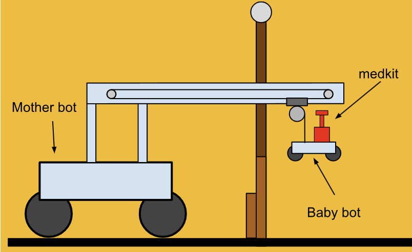
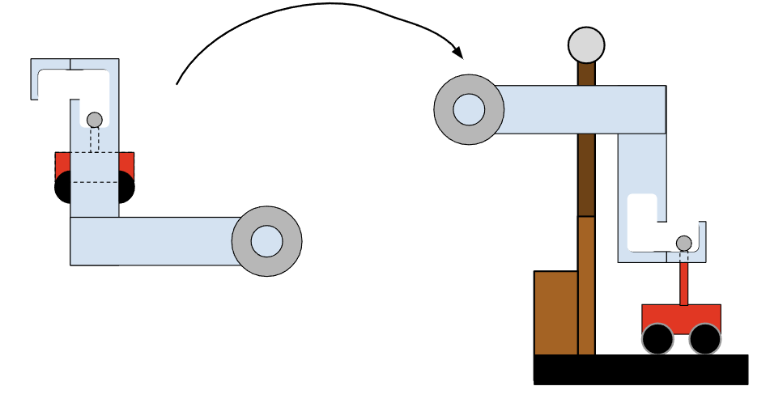
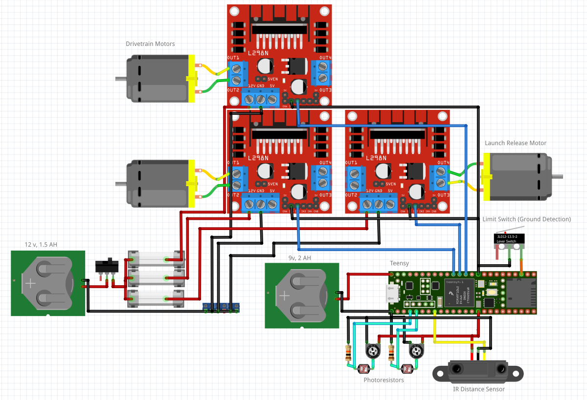
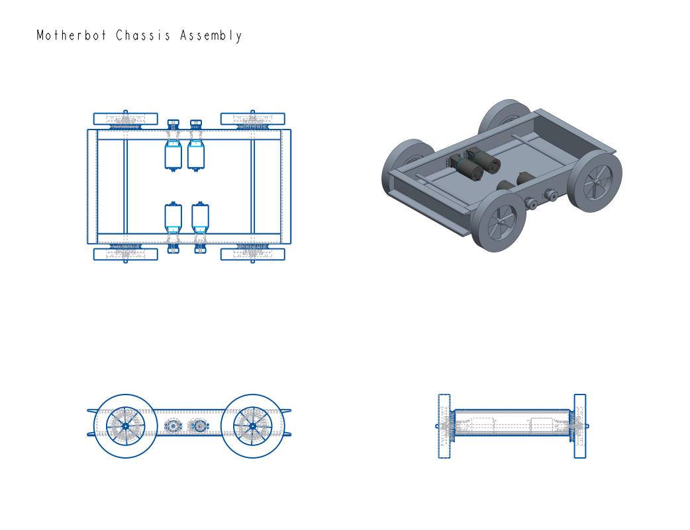
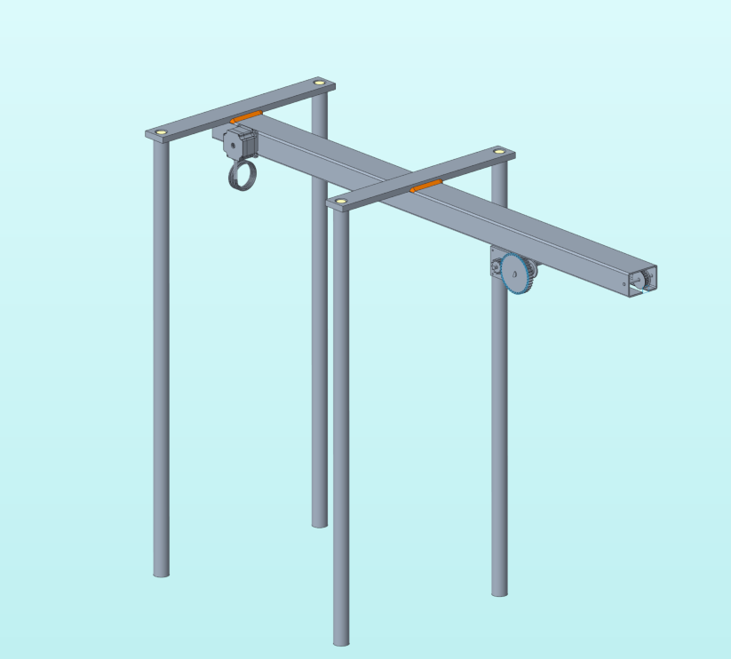
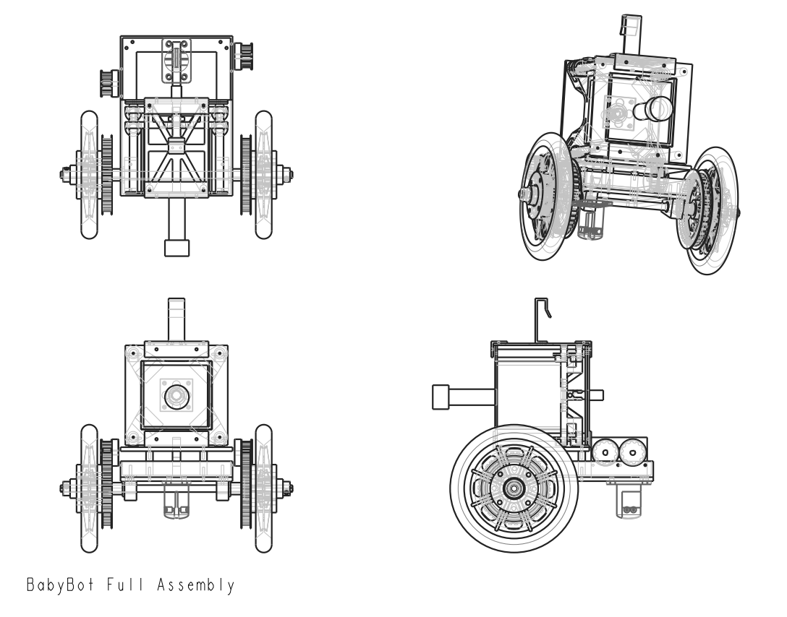
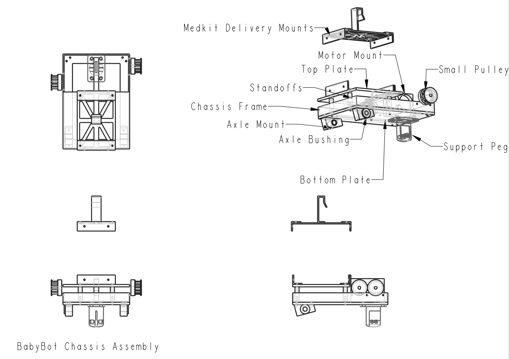
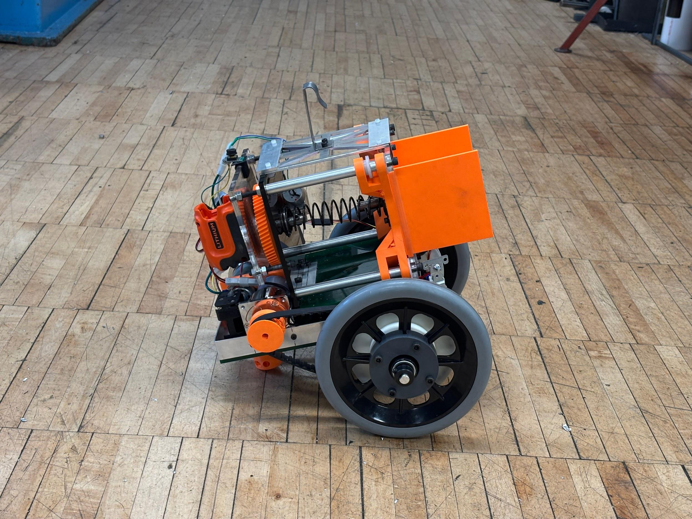

Abstract
An eleven-member team designed and built a marsupial search-and-rescue robot over eight weeks as the culminating project for MAE 322: Mechanical Engineering Design. The system consists of a large parent robot (the Motherbot) that autonomously navigates a multi-obstacle course — including a ramp, a chute, and a 36-inch wall — while carrying a smaller sub-robot (the Babybot). Upon reaching the wall, an onboard motorized lifting arm deploys the Babybot over the top; the Babybot then navigates independently to a target zone and delivers a medkit payload. Both robots operate via closed-loop control using CdS phototransistor arrays for line-following and ultrasonic distance sensors for obstacle detection.
My primary contributions were the mechanical design — including FEA, manufacturing drawings, and fabrication — of the Motherbot's low-carbon steel chassis and the 60:1 two-stage belt-driven drivetrain.
System Overview
The mission splits into two phases. In Phase 1, the Motherbot drives the full obstacle course while the Babybot rides secured to the lifting arm. The Motherbot navigates a flat section, climbs a ramp, traverses a chute, and stops at a 36-inch wall. In Phase 2, the lifting arm autonomously swings the Babybot up and over the wall, setting it down on the other side. The Babybot then operates independently, following its own sensor-guided path to the target zone where it detects a bright incandescent light and deploys its medkit payload.
System Concept

Lifting Arm Deployment Sequence

Software Architecture
Both robots share the same overarching control architecture: a main loop reads sensor data, evaluates the current state, selects a control action, and drives the motors. This allows each robot to switch between distinct control strategies as the terrain and mission phase change.
The Motherbot progresses through five sequential states. On the flat approach section it uses proportional control, computing a steering correction from the difference between left and right CdS phototransistor readings. On the ramp it switches to bang-bang control — full motor power — to climb without stalling. Through the chute it applies PD control to damp the oscillation that proportional-only control would introduce in the narrow channel. At the wall, an open-loop timed sequence stops the robot and triggers the lifting arm. The Babybot runs the same architecture after deployment: proportional CdS line-following to the target, a CdS-triggered servo release of the medkit, then line-following back to the wall.
State transitions on both robots are driven by ultrasonic distance sensors. The Motherbot detects the ramp base, chute entry, and wall at defined approach distances and shifts its control mode accordingly; the Babybot uses ultrasonic range to detect the wall on return. CdS phototransistors are wired as voltage dividers and mounted low to the ground spanning the width of the course tape. The analog voltage difference between the left and right sensors is the error signal fed directly into the controller. The same CdS logic that steers both robots also triggers medkit delivery — the Babybot's delivery state activates when the sensor reading exceeds the threshold set for the bright incandescent target light.
Electrical Systems
Each robot carries an independent electrical system powered by onboard batteries. On the Motherbot, four CIM brushed DC motors are driven by L298N H-bridge motor driver modules, one per motor. A Teensy microcontroller receives sensor inputs and outputs PWM signals to the motor drivers to execute the control law. The CdS phototransistors are wired as voltage dividers, and the ultrasonic sensors communicate via standard trigger-echo GPIO pins. The Babybot uses the same sensor and microcontroller architecture scaled to its two-motor drivetrain and servo-actuated delivery mechanism.
Wiring harnesses were built with labeled connectors to allow subsystem swap-out during integration and debugging. The electrical design was developed in parallel with the mechanical subteams and finalized before manufacturing began, ensuring that motor driver mounting locations and sensor attachment points were incorporated into chassis and structural designs from the start.
Motherbot Wiring Schematic

Mechanical Design — Motherbot Chassis
The Motherbot chassis is the structural backbone of the entire system, supporting the four-motor drivetrain, the lifting arm mounting point, all onboard electronics, and the weight of the Babybot during Phases 1 and 2. Low-carbon steel (AISI 1018) channel stock was selected for its yield strength, weldability, and machinability — all critical constraints given the available machine shop equipment (MIG welder, Bridgeport knee mill, horizontal band saw).
I designed the chassis geometry in Onshape, iterating on cross-section sizes and joint locations to maximize rigidity at the motor mount positions and lifting arm attachment point while minimizing overall mass within the weight budget. A free body diagram approach was used to locate the system's center of mass and verify tip-over stability during wall traversal — a non-trivial constraint because the Babybot is cantilevered at height by the arm during deployment. Structural analysis confirmed that chassis members and welded joints remained below yield under combined static loading and the dynamic torque from the lifting arm.
The chassis was cut to length on the band saw, coped at intersections, tack-welded on a flat reference surface for squareness, and finish-welded in the machine shop. The completed weldment showed no visible deformation through all testing.
Chassis Assembly — Four Views

Mechanical Design — Drivetrain
Moving the fully loaded Motherbot — carrying the Babybot, lifting arm, and all electronics — over the ramp and chute required substantial wheel torque from the CIM brushed DC motors. I designed a 60:1 two-stage belt reduction to step down motor speed while multiplying output torque. HTD-profile toothed belts route power from each motor shaft through an intermediate jackshaft to the final drive axles. The axle configuration places both drive wheels on a common shaft per side, providing synchronized four-wheel drive.
Belt drives were selected over chain or gear trains for their shock-absorption characteristics, low noise, and tolerance for minor shaft misalignment — all important on a robot subject to hard impacts traversing the ramp step. Pulley diameters and jackshaft sizing were calculated to keep belt tensions within rated limits at the maximum motor stall torque. An early integration issue — slight belt walk on one drivetrain — was resolved by adding adjustment slots to the motor mount brackets, allowing precise pulley alignment without disassembling the chassis.
Mechanical Design — Lifting Arm
The lifting arm is the most mechanically complex subsystem on the Motherbot — it must pick up the Babybot from a carrier bay, swing it up and over a 36-inch wall, and set it down cleanly on the other side, all autonomously. Early concept designs explored a gantry-style crane mechanism, but this was rejected for its size and mass penalty. The final design uses a rotating arm that pivots about a fixed point on the Motherbot frame. A DC motor drives the arm through a belt-and-pulley reduction, rotating the arm from a stowed horizontal position to a fully raised position that clears the wall.
The Babybot attaches to the end of the arm via a cradle assembly that uses a spring latch mechanism. As the arm lifts, the cradle keeps the Babybot level to prevent it from slipping out. When the arm reaches the far side of the wall and begins to lower, the cradle contacts a release surface that unlatches, depositing the Babybot on the ground behind the wall. The arm then retracts automatically under motor control. Motor torque requirements for lifting and horizontal movement were calculated analytically using arm geometry, Babybot mass (~30 lbf), and friction coefficients.
Early Lifting Arm Concept — Gantry Design

Mechanical Design — Babybot
The Babybot is a compact two-wheel-drive robot designed to fit within the Motherbot's carrier bay and operate independently after deployment. Its chassis was designed around the same structural priorities as the Motherbot — low center of mass, rigid motor mount points, and a flat deck for electronics — but fabricated primarily in 3D-printed PLA to minimize weight. The Babybot carries its own CdS sensor array, ultrasonic sensor, microcontroller, motor drivers, and battery pack, all integrated within a tight envelope constrained by the wall width and carrier bay dimensions.
The medkit delivery system is a servo-actuated mechanism that holds the medkit during transit and releases it when the CdS sensors detect the bright incandescent light at the target zone. The gripper mechanism was designed to grip the medkit's cylindrical handle reliably under the vibration of driving, and to release it cleanly on a single servo trigger without jamming.
Babybot Full Assembly

Babybot Chassis Assembly

Manufacturing
The steel Motherbot chassis was cut on a horizontal band saw, coped at intersections using the knee mill, and MIG-welded on a flat reference plate to maintain squareness. Drive pulleys and jackshafts were turned on a manual lathe; motor mount brackets were milled on the Bridgeport. The Motherbot's 3D-printed components — sensor mounts, wiring guides, and electronics enclosures — were printed in PLA on FDM printers and fastened with standard hardware.
All Babybot structural components, including the chassis, axle mounts, medkit delivery mechanism, and gripper assembly, were 3D-printed in PLA and assembled with standard hardware and off-the-shelf fasteners. The arm lifting mechanism was fabricated from a mix of 3D-printed structural brackets and aluminum extrusion.
All subteams worked from a shared Onshape assembly model that defined interface dimensions — the carrier bay, arm pivot location, and electronics deck — as top-level parameters, ensuring that independently designed subsystems fit together without modification during assembly.
Testing and Results
The completed robot successfully navigated the full obstacle course in the final class demonstration. The Motherbot's CdS-guided proportional control maintained course tracking on the flat section. Ultrasonic sensing correctly triggered state transitions at the ramp base and chute entry. The 60:1 belt drivetrain provided ample torque to climb the ramp and step up to the wall platform with the full Babybot payload.
The lifting arm autonomously deployed the Babybot over the 36-inch wall. The Babybot landed successfully, activated its state machine via the base switch, navigated by CdS line-following to the target zone, detected the light source, and released the medkit into the delivery basket. The steel chassis showed no visible deformation after testing. The system demonstrated that an autonomous marsupial robot platform can be designed, manufactured, and integrated within an eight-week academic timeline through disciplined subteam interface management.
Completed Babybot
